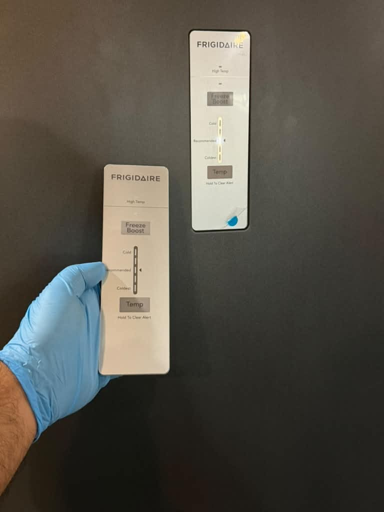
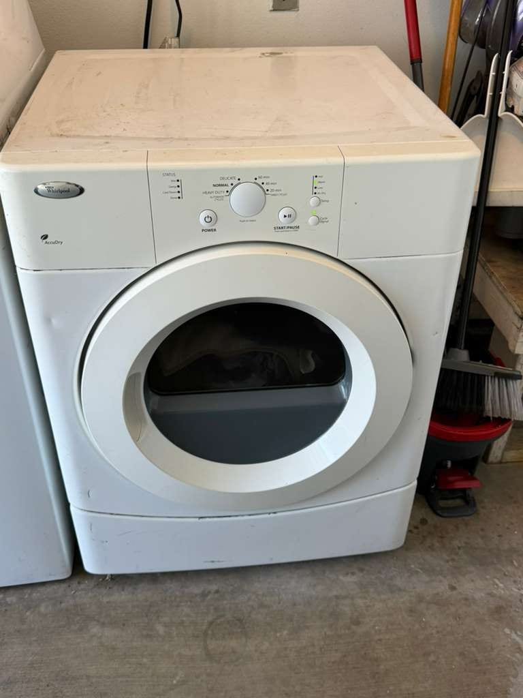
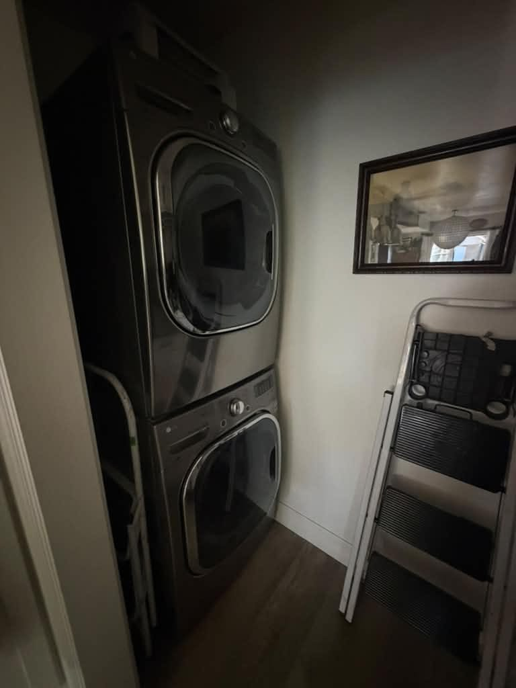

Appliance Repair in Long Beach, CA
Serving all of Long Beach (ZIPs 90802–90815). Same-day appointments when the schedule is open. Licensed and insured.
5.0 · 162 Google reviewsMon–Sat, 8am–7pm. Two-hour arrival window. The technician calls before arriving.
See neighborhoods and ZIP codes
What to expect
- Flat $99 diagnostic feeApplied toward the repair if you approve the work.
- Written quote firstItemized, before any work starts.
- 90-day parts, 30-day laborWarranty on every repair.
- Same-day serviceCall or request online.
Family-owned since 2017 · Licensed, bonded & insured
Recent Work in Long Beach
Real work completed at Long Beach addresses, photographed on the job.

Whirlpool · Dryer · Long Beach, CA
Whirlpool dryer, not heating
What Our Customers Say
From our 162 verified 5-star Google reviews
Great service! He was on time, clean, neat, and very professional. He did a great job repairing my fridge and I would definitely recommend him.
Excellent service! The technician received the part and came to fix my washer immediately. He was professional, knowledgeable and kind. Fair pricing and great communication throughout the process. Highly recommend!
Not only was he able to come same day but his quality of service was exceptional and very reasonably priced
Services We Offer in Long Beach
Each link below opens the full service page for that appliance, with the brands we cover and the faults we run into most.
What We Fix Most in Long Beach
- Refrigerator repair
- A refrigerator that runs but will not cool usually comes down to a condenser or evaporator fan, a defrost fault that has iced over the coils, a failed start relay, or, less often, a sealed-system problem. The diagnostic visit tells you which one it is and what the part costs before anything is replaced. If you want to rule out the simple causes first, read our guide to a refrigerator not cooling in Long Beach, or see the full refrigerator repair page.
- Washer repair
- Washers that will not drain, will not spin, or leave water on the floor most often have a blocked or failed drain pump, a worn door lock or lid switch, or a leaking hose or inlet valve. We repair front-load and top-load machines from Whirlpool, LG, Samsung, Maytag, and other brands. More detail is on our washer repair page.
- Dryer repair
- When a dryer tumbles but stays cold, the usual suspects are the heating element or thermal fuse on an electric model, and the igniter or gas valve coils on a gas model. A clogged vent can cause the same symptom and wear out those parts, so we check airflow as part of the diagnosis. The Whirlpool dryer in our recent work above came to us with exactly that no-heat complaint. See the dryer repair page for more.
- Dishwasher repair
- Standing water after a cycle, dishes that come out dirty, or a leak at the door usually point to a drain pump or filter problem, a failed wash motor, or a worn door gasket. We service built-in and standard dishwashers from Bosch, Whirlpool, KitchenAid, Samsung, LG, and more. Our dishwasher repair page covers the common faults.
Request
Call (949) 629-5365 or use the online form, and tell us the brand, the appliance, and what it is doing.Diagnose
Your technician arrives in your scheduled window, then runs a full diagnostic.Quote
You get the repair price up front, before any work starts, and you decide whether to go ahead.Repair + Warranty
Many repairs are finished on the same visit, and every repair comes with a 90-day parts and 30-day labor warranty.
Long Beach Repair Pricing
Every visit starts with a flat $99 diagnostic, which comes off the repair bill if you go ahead. Typical Long Beach repairs run $150–$400; sealed-system work and built-in luxury units cost more. Repeat customers and seniors 60+ get 20% off labor.
Estimates vary by brand, part availability, and diagnosis. Final quote is provided before repair. Full pricing guide
Long Beach Neighborhoods We Serve
Long Beach is a major coastal city in southern Los Angeles County, running from the San Pedro Bay waterfront inland along the I-710 and I-405 corridors. The city covers about 11 residential ZIP codes; ZIPs 90801 and 90809 are post-office box designations only. We serve every residential neighborhood, from the high-rises of Downtown to the waterfront homes of Naples and Belmont Shore, with no travel surcharges for any Long Beach address.
-
Downtown Long Beach
ZIPs 90802, 90813High-rise condos, lofts, and apartments near the waterfront. Compact kitchens with standard and premium appliances.
-
Belmont Shore / Naples
ZIPs 90803, 90814The canal-side homes of Naples Island and the beach-close blocks of Belmont Shore.
-
Bixby Knolls / Los Cerritos
ZIP 90807Single-family streets in Bixby Knolls and Los Cerritos, with full-size kitchens and laundry rooms.
-
Alamitos Beach / East Village
ZIPs 90802, 90814Dense coastal residential between Downtown and Belmont Shore. A range of vintage apartments and updated condos.
-
Wrigley / West Long Beach
ZIPs 90806, 90810Family homes and apartments across Wrigley and West Long Beach.
-
Los Altos / CSULB Area
ZIPs 90808, 90815Residential streets around the Cal State Long Beach campus.
-
North Long Beach
ZIP 90805Single-family homes and apartment buildings throughout North Long Beach.
-
Eastside / Rose Park
ZIP 90804Rose Park and the surrounding Eastside blocks, a mix of older houses and apartments.
About Long Beach
Long Beach is the second-largest city in Los Angeles County, home to about 450,000 people. The Queen Mary, docked here since 1967, and the Aquarium of the Pacific, open downtown since 1998, are its best-known landmarks, and the Port of Long Beach is one of the busiest container ports in the country. The city also takes in the canals of Naples Island, the beach neighborhood of Belmont Shore, Long Beach Airport (LGB), and the Cal State Long Beach campus, and it completely surrounds the small, separate city of Signal Hill. Across the San Gabriel River and the county line, Long Beach borders Orange County, where we also serve neighboring Seal Beach and Los Alamitos. Long Beach Utilities also runs two water zones with very different hardness, which matters if your dishwasher has a hardness setting; our LA County hard water guide compares them by provider.
Common Appliance Problems We Fix
We fix most of these in a single visit once the cause is confirmed. Here are the problems we diagnose and repair in Long Beach homes. For a fridge that has stopped cooling, start with our guide to the 5 most common causes of a refrigerator not cooling before you call.
- Fridge section warm while the compressor keeps running
- Freezer frosting over or losing temperature
- Washer leaving water in the drum after the cycle
- Dryer tumbling without heat, or needing two cycles
- Dishwasher leaving dirty water in the bottom
- Built-in range or wall oven that will not power on
- Oven that will not reach or hold its set temperature
- Gas burner clicking without lighting
- Convection fan grinding or not turning
- Disposal that hums but will not grind
- Ice maker that has stopped making or dropping ice
- Wine cooler drifting away from its set temperature
Brands we repair
We work on everyday Whirlpool and LG machines and on built-in Sub-Zero and Viking units alike, across every Long Beach neighborhood. We also repair Dacor and DCS.
- Sub-Zero
- Wolf
- Samsung
- LG
- Whirlpool
- GE
- Maytag
- Frigidaire
- Bosch
- KitchenAid
- Kenmore
- Miele
- Thermador
- Viking
- Electrolux
Independent repair service. Not affiliated with or endorsed by these manufacturers; brand names and logos are trademarks of their owners. If your appliance is still under manufacturer warranty, check with the manufacturer before booking.
Appliance repair across Long Beach
Universal Appliances Repair Group Inc. serves Long Beach, CA, across residential ZIP codes 90802 through 90815, from Downtown, Alamitos Beach, Belmont Shore, and Naples to Bixby Knolls, Wrigley, Los Altos, and North Long Beach. We repair refrigerators, washers, dryers, dishwashers, ovens, stoves, freezers, garbage disposals, and wine coolers.
Same-day appointments are available when the schedule is open. We also serve nearby Seal Beach, Los Alamitos, and Cypress. Call (949) 629-5365 or book online.
FAQ: Long Beach Appliance Repair
Still have a question? Call (949) 629-5365.
Often, yes. We book same-day Long Beach visits whenever the schedule has an opening, and an early call gives you the best chance. If today is already full, you get the next available appointment, usually within a day or two. Call (949) 629-5365 and we will check today's openings for your address.
Yes. Long Beach is part of our Los Angeles County coverage and gets the same terms: the flat $99 diagnostic fee, credited toward the repair if you go ahead, the 90-day parts and 30-day labor warranty, and the same scheduling, with same-day visits when the schedule is open. There are no travel surcharges for any Long Beach address.
We cover all Long Beach residential ZIP codes: 90802 (Downtown), 90803 (Belmont Shore/Naples), 90804 (Eastside), 90805 (North Long Beach), 90806 (Wrigley), 90807 (Bixby Knolls), 90808 (Los Altos), 90810 (West Long Beach), 90813 (Downtown), 90814 (Alamitos Beach), and 90815 (Los Altos/CSULB area). ZIPs 90801 and 90809 are post-office box designations only. There are no travel surcharges for any Long Beach address.
All the major ones. In Long Beach we work on LG, Samsung, Whirlpool, GE, Maytag, KitchenAid, Bosch, Frigidaire, Electrolux, and Kenmore, as well as built-in Viking, Sub-Zero, Wolf, Dacor, Thermador, and Miele units. A Whirlpool dryer that would not heat is one of the Long Beach jobs shown on this page.
The diagnostic is a flat $99, and it is credited toward the repair if you go ahead. After that, the price depends on the appliance, the part, and the brand: typical Long Beach repairs come to $150 to $400, while sealed-system work and built-in luxury units run higher. Estimates vary by brand, part availability, and diagnosis. Final quote is provided before repair.
Yes. Every repair comes with a warranty covering 90 days on parts and 30 days on labor. If the same problem comes back inside 30 days, we return and fix it at no extra cost; replaced parts stay covered for 90 days. The technician explains the warranty terms along with the quote, before any work starts.
Need Appliance Repair in Long Beach?
Same-day appointments across Long Beach (ZIPs 90802–90815) when the schedule is open. Licensed technicians, 90-day parts / 30-day labor warranty on every repair.
Call (949) 629-5365
Request a Repair
Mon–Sat, 8am–7pm